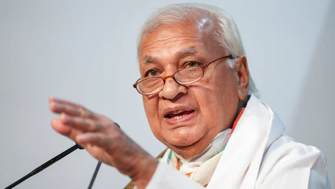
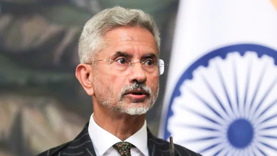

India has been vigorously pursuing the extradition of economic fugitives so that they face justice in India. We welcome the decision of the UK High Court. We want to bring him to India as soon as possible: MEA spox Arindam Bagchi on Nirav Modi extradition order by UK HC
In August last year, Modi was allowed to appeal against the extradition on two grounds - under Article 3 of the European Convention of Human Rights (ECHR) to hear arguments if it would be unjust or oppressive to extradite him due to his mental state, and Section 91 of the Extradition Act 2003, also related to mental health.
Speaking on Day 3 of the Hindustan Times Leadership Summit 2022, external affairs minister (EAM) S Jaishankar said, “The people of India want good neighbourly relations with Pakistan, as does the Government of India, However, good neighbours do not carry out or condone terrorist activities.”
